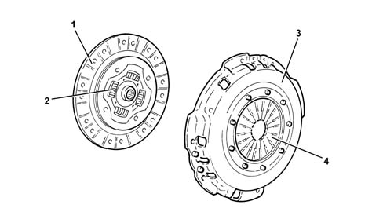
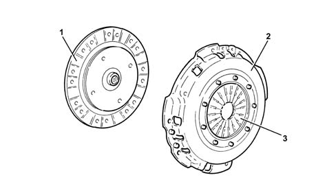

Introduction - CLUTCH MECHANISMS
- Path
- Descriptions > 18 CLUTCH > 1810 CLUTCH MECHANISMS > Introduction - CLUTCH MECHANISMS
- Kind
- system description
- Applies to
- engines: 1.6 TS, 2.0 TS, 1.9 JTD 8V; all production periods
- Interactive page
- https://sloeber94.github.io/elrnDB-a147/en/#/3026096
Applies to: engines: 1.6 TS, 2.0 TS; all production periods
INTRODUCTION
On all versions the clutch mechanism consists of a clutch mechanism, with a diaphragm spring and thrust release and a dry, single plate type clutch plate with flexible coupling springs.

1 - Clutch plate 2 - Flexible couplings 3 - Clutch mechanism 4 - Pressure plate spring
OPERATION
The engagement/release of the dry, single plate type clutch takes place through the action of the thrust bearing pressed against the flexible coupling spring.
The movement causes the discharge of the pressure of the spring which keeps the clutch plate in contact with the flywheel, thereby interrupting the transmission of power to the gearbox.
Applies to: engines: 1.9 JTD 8V; all production periods
INTRODUCTION
On all versions the clutch mechanism consists of a cage, with diaphragm pressure plate and thrust disengagement, and a progressive rigid dry single clutch plate (no springs), as the vibration damping action is achieved by the two weights on the dampened double flywheel.

1 - Clutch plate 2 - Cage 3 - Pressure plate
OPERATION
The engagement/release of the dry, single plate type clutch takes place through the action of the thrust bearing pressed against the flexible coupling spring.
The movement causes the discharge of the pressure of the spring which keeps the clutch plate in contact with the flywheel, thereby interrupting the transmission of power to the gearbox.